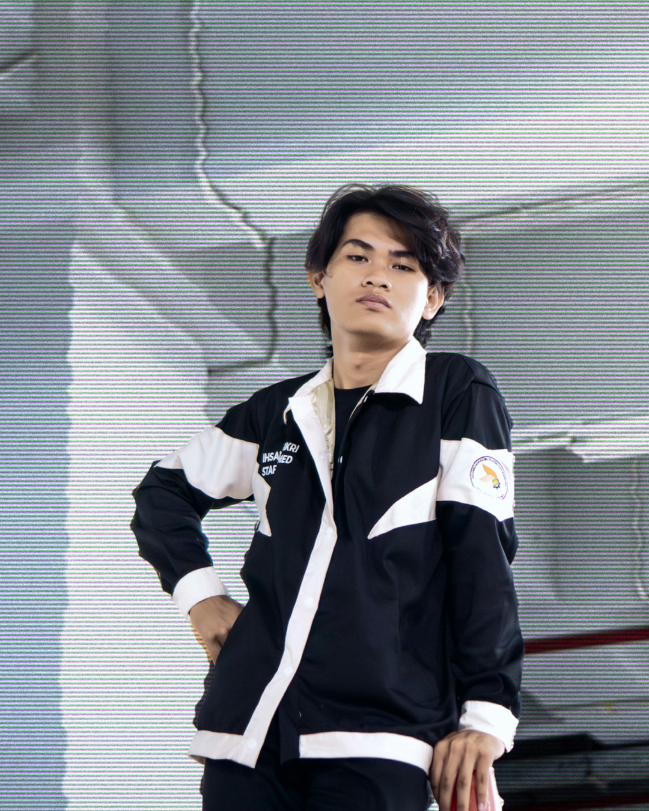

Halo! Saya Ihsanul Fikri, seorang pengembang web yang bersemangat dengan pengalaman dalam membangun aplikasi web yang responsif dan menarik. Di portofolio ini, Anda akan menemukan beberapa proyek yang telah saya kerjakan, serta informasi tentang latar belakang saya dan keahlian yang saya miliki.
Hubungi saya
Saya adalah seorang mahasiswa fakultas ilmu komputer yang memiliki minat di pemrograman website. Saya memiliki keahlian dalam HTML, CSS, JavaScript. Saya juga memiliki pengalaman dalam bekerja dengan tim dan berkolaborasi dalam proyek-proyek besar.
2019-Sekarang
Saya sedang menempuh pendidikan di Fakultas Ilmu Komputer Universitas Pembangunan Nasional "Veteran" Jawa Timur. Saya aktif dalam berbagai kegiatan akademik dan proyek kelompok.
2025-2026
Saya bekerja sebagai anggota bagian multimedia di Badan Eksekutif Mahasiswa Fakultas Ilmu Komputer. Saya bertanggung jawab dalam membuat konten visual dan desain untuk berbagai kegiatan organisasi.
Email : ihsanulfikri31762gmail.com
Instagram : @ihsannulf_